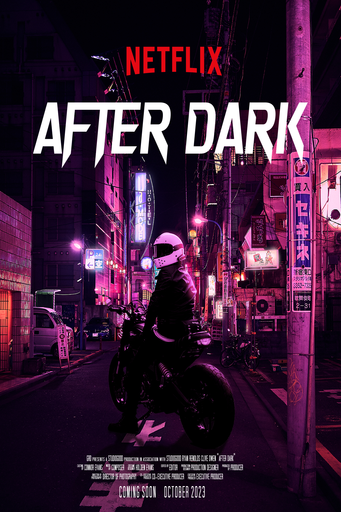

After Dark
- PG-13
- Thriller & Drama
- 110 m
Overview
The clock strikes midnight and Mari Asai is nestled in a booth at a Denny's in downtown Tokyo. Mari assumes her night will be like any other, read until the sunrises and head home to sleep. But, her night is turned upside down when she meets a man claiming to know her sister, Eri Asai. The unlikely pair encounter the nightcrawlers of Tokyo; organized crime groups, people on the run and meet interesting allies.